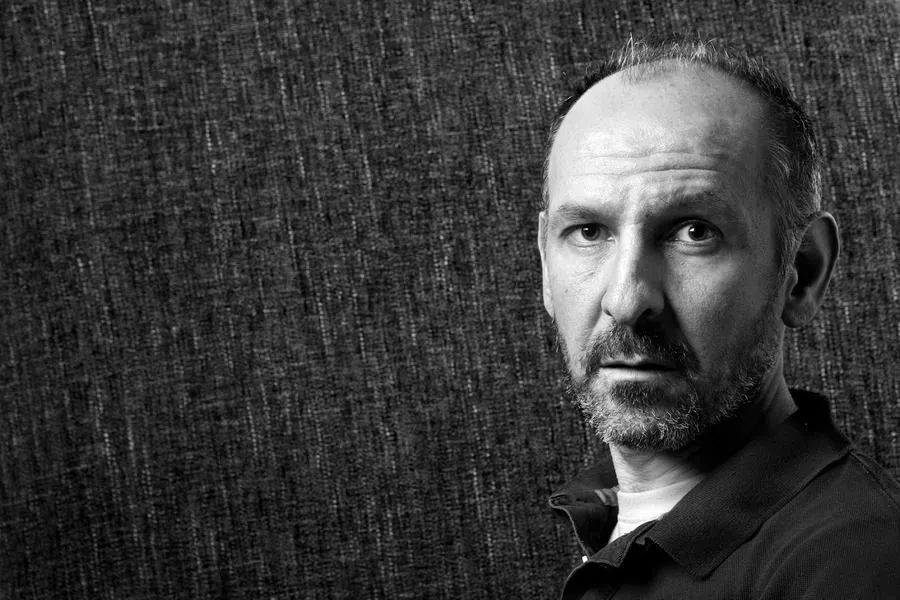

Bio
Writer, poet, journalist and lecturer

Óscar Curieses (Madrid, 1972) is a writer, poet, journalist and lecturer at the University of Alcalá (UAH).
Poetry
He has published the poetry collections Sonetos del útero (Bartleby, 2007), Dentro (Bartleby, 2010), Hay una jaula en cada pájaro (Ya lo dijo Casimiro Parker, 2013), Constitución Española (Ya lo dijo Casimiro Parker, 2021) and Libro de los icebergs (Varasek Ediciones, 2022).
Fiction and essays
His novel Hombre en azul (Jekyll and Jill, 2014), about the painter Francis Bacon, was very well received by critics for the way it blends genres such as the personal diary, the essay and fiction. Tengo la impresión de que el cielo se prepara para la lluvia (Espasa, 2024) brings together short stories accompanied by drawings by El Roto and Rábago, and in 2026 he published El operario y la sal (El escorpión azul) as a handmade cardboard edition.
He wrote En el cine de Auster (Huerga y Fierro, 2022), on the writer and filmmaker Paul Auster, with a foreword by Manuel Gutiérrez Aragón: to date the only study devoted to his entire filmography, Smoke, Blue in the Face, Lulu on the Bridge and The Inner Life of Martin Frost.
Journalism
As a journalist he has written for publications such as Muy Historia, Muy Interesante, El País, Zenda, ABC, Cuadernos Hispanoamericanos and Quimera.
Performance and spoken word
He has worked with other artists on mixed-media pieces close to performance: Biolencias (2007), with the documentary filmmaker David Reznak; El grito es un movimiento inacabado (2013), with the improvisation band AMC313; Dentro (2015), with the French choreographer Catherine Diverrès; and Lejos está el que mira (2018) and Cuaderno 210: El espectro de Marie Curie (2020), with the composer Edith Alonso.
He currently runs the spoken word project La poesía, si es que existe with Pablo Ramírez, which has produced pieces such as Train to Machado (2020), W+D: Whitman + Dylan (2022–2023) and Casi un libro de icebergs (2020–2024). See the performances
Curating and editing
He curated the exhibition OPS, El Roto, Rábago: Una microhistoria del mundo for the Centro José Guerrero in Granada (2022) and the Círculo de Bellas Artes in Madrid (2023). He is the author of OPS, El Roto, Rábago. Una microhistoria del mundo (RM, 2022), the catalogue of both exhibitions, and edited Los tiempos bárbaros (Reservoir Books, 2023), by OPS.
Translation
As a translator he has published La célula de oro (The Gold Cell, Bartleby, 2017) and Óvulos en la mano (Ya lo dijo Casimiro Parker, 2023), by Sharon Olds; La comedia eléctrica (The Electric Comedy, Amargord, 2017), by Rolando Pérez; and La poesía como arte insurgente (Poetry as Insurgent Art, Casus Belli, 2026), by Lawrence Ferlinghetti.